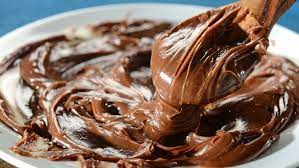

Jantar com meu irmão Eduardo
Pizza de Mussarela
Ingredientes
- 500 g de farinha de trigo
- 2 tabletes de fermento biológico
- 1 colher de chá de sal
- 1 colher de chá de açúcar
- 1 colher de sopa de óleo
- 1 copo de água morna
Recheio
- 500 g de queijo de mussarela
- Molho de tomate a gosto
- Tomate em rodelas a gosto
- Orégano a gosto
Modo de Preparo
- Em uma tigela juntar os ingredientes, acrescentando a água aos poucos.
- Bata a massa até que fique com uma consistência homogênea e elástica.
- Deixe descansar em um recipiente por 30 minutos, ou até que a massa dobre de tamanho.
- Enquanto a massa descansa, deixe o forno aquecendo.
- Dica: jogue uma bolinha de massa dentro de um copo de água.
- A bolinha irá parar no fundo.
- Quando ela subir, a massa estará pronta para ser cozida.
Recheio
- Após a massa estar descansada, estique-a com um rolo de madeira, sobre a mesa.
- Acomode a massa em uma forma de pizza.
- Depois é só colocar o recheio na seguinte ordem: molho de tomate, queijo mussarela, rodelas de tomate e orégano.
- Deixe cozinhar por 20 minutos em fogo médio, ou até que a massa fique crocante.
- Depois retire e deixe esfriar.
- Sirva em seguida.
Brigadeiro de colher

Ingredientes
- 1 caixa leite condensado
- 1 caixa creme de leite
- 7 colheres (sopa) de chocolate em pó
- 2 colheres (sopa) de chocolate armago em pó
- 1 colher (sopa) de manteiga
- 1 xícara (chá) de leite
Modo de Preparo
-
Leve ao fogo médio uma panela com o leite condensado, chocolate em pó e mateiga .
Com uma colher, misture bem até dissolver
-
Em seguida, junte o creme de leite. Misture até desgrudar do fundo da panela,
mexendo sempre. Desligue e transfira para uma tigela ou prato.
-
Dica: Se quiser um brigadeiro no ponto de enrolar, é só cozinhar um pouco mais.